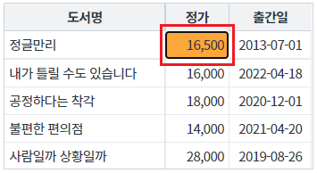
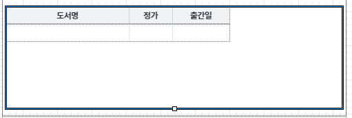
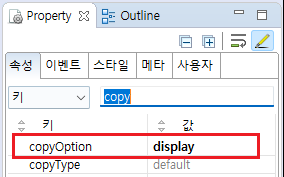
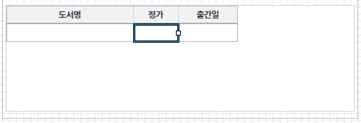
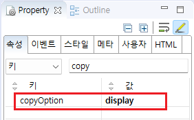
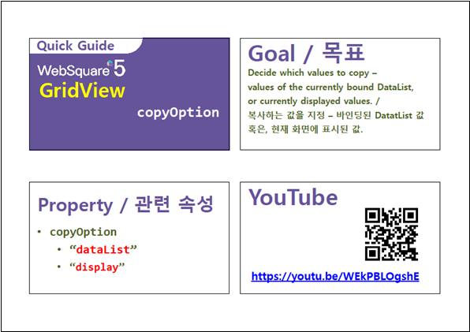

GridView에서 데이터 복사(Ctrl+C)를 할 때 데이터 출처의 설정 예제입니다. 기본 동작은 GridView와 연결된 DataList의 값으로 복사되는 것이며, 설정을 통해 화면에 출력된 값을 복사하도록 변경할 수 있습니다.
복사할 데이터의 출처를 GridView 연결된 DataList의 값으로 설정하기
복사할 데이터의 출처를 GridView에 출력된 값으로 설정하기
GridView의 컬럼별 복사할 데이터 출처 설정하기
이 예제의 GridView는 같은 DataList와 연결되어있습니다. DataList의 값과 화면에 출력된 값이 다른 컬럼은 정가, 출간일 입니다. 각 컬럼의 데이터를 복사(Ctrl+C)/붙여넣기(Ctrl+V)하여 복사된 값을 비교합니다.
이 예제의 데이터 복사는 키보드의 단축키(Ctrl+C)를 눌러 사용할 수 있으며, 셀(Cell) 단위로 동작합니다.
[실행된 화면 예시 이미지]

키보드 복사 단축키 Ctrl + C를 누릅니다.
메모장, 엑셀 등의 에디터에서 붙여넣기(Ctrl + V)하여 복사된 데이터를 확인합니다.
DataList의 값이 복사된 경우는 16600 이 복사됩니다.
화면에 출력된 값이 복사된 경우는 16,500 이 복사됩니다.
DataList 생성 및 연결은 생략되었습니다.
GridView의 속성을 정의합니다.
copyOption="display" //데이터 복사 시 화면에 출력된 값을 기준으로 복사합니다.
"dataList" (기본 값) : 데이터 복사 시 dataList에 들어있는 값을 기준으로 복사합니다.
"display" : 데이터 복사 시 화면에 출력된 값을 기준으로 복사합니다.
[웹스퀘어5 SP5 스튜디오의 Design 탭 예시]

[웹스퀘어5 SP5 스튜디오의 Property View(속성창) 예시]

<!-- gridView 의 소스 본문 예시 --> <w2:gridView copyOption="display" dataList="data:dlt_books" > <!-- 중략 --> </w2:gridView>
적용할 컬럼의 속성을 정의합니다.
copyOption="display" //데이터 복사 시 화면에 출력된 값을 기준으로 복사합니다.
"dataList" (기본 값) : 데이터 복사 시 dataList에 들어있는 값을 기준으로 복사합니다.
"display" : 데이터 복사 시 화면에 출력된 값을 기준으로 복사합니다.
[웹스퀘어5 SP5 스튜디오의 Design 탭 예시]

[웹스퀘어5 SP5 스튜디오의 Property View(속성창) 예시]

<!-- gridView 의 소스 본문 예시 --> <w2:gridView dataList="data:dlt_books"> <!-- 중략 --> <w2:column copyOption="display" id="price" dataType="number" displayFormat="#,###"> </w2:column> <!-- 중략 --> </w2:gridView>
[웹스퀘어5 SP5 개발 가이드] GridView
링크 : https://docs1.inswave.com/sp5_user_guide/86bdcf48029b958b
[웹스퀘어5 SP5 개발 가이드] GridView 복사 기준 설정 (copyOption)
링크 : https://docs1.inswave.com/sp5_user_guide/86bdcf48029b958b#c3c0079f1cac7b92
GridView 복사 기준 설정 (copyOption)
링크 : https://youtu.be/WEkPBLOgshE
